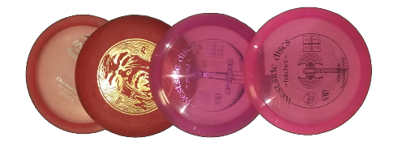
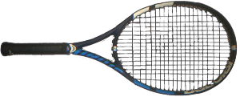

Teo Oinonen
Tietoja
Nimeni on Teo Oinonen ja työskentelen tällä hetkellä projektisihteerinä
Jyväskylän ammattikorkeakoulussa. Aloitin työt JAMK:ssa joulukuussa 2020.
Työskentelin kirjanpidon ja muun talouden hoidon parissa Alteams Oy:ssä 2,5 vuoden ajan aikavälillä 2018-2020.
Lisäksi olen kerennyt toimimaan viitisen vuotta taksinkuljettajana Jyväskylässä vuosina 2012-2017.
Seuraava tavoitteeni on päästä kouluttautumaan tieto- ja viestintätekniikan insinööriksi JAMK:ssa ja sen kautta
päästä työllistymään alalle.
Alalla minua kiinnostaa erityisesti Web-ohjelmointi, ohjelmistokehitys sekä mediatekniikka.
Ala on kiinnostanut minua jo pidemmän aikaa ja nyt olen valmis ottamaan siitä kaiken irti.
Portfolio
Jyväskylän Ammattikorkeakoulu
Projektisihteeri ; 12/2020-
- Yksikkö: Teknologia
- Biotalousinstituutin projektien taloudellinen seuranta
Alteams Oy
Pääkirjanpitäjä ; 12/2019-11/2020
Taloushallinnon assistentti ; 5/2018-11/2019
Jyväskylän Ammattikorkeakoulu
Liiketalous, tradenomi
2016-2021
Taksi Pasi Penttinen Oy
Taksinkuljettaja / esteetön taksi / tilataksi
12/2012-10/2017
- Asiakaskyydit
- Sairaalakuljetukset
Varusmiespalvelus
Keuruun pioneerirykmentti ; 1/2011-1/2012
Pioneeri / Sotilaskuljettaja
Sepän Lukio
Ylioppilas 2010
Olen käynyt muutama vuosi sitten web-ohjelmointiin ja ohjelmointiin liittyviä kursseja, joista jäi sellainen tunne, että
näitä hommia olisi mukava päästä tekemään enemmänkin.
Nyt tavoitteenani on päästä opiskelemaan tieto- ja viestintätekniikan
ammattilaiseksi JAMK:ssa ja sen myötä työskentelemään alalle.
Alalla minua kiinnostaa erityisesti Web-ohjelmointi, ohjelmistokehitys sekä mediatekniikka.
Olen vastuuntuntoinen, luotettava sekä ahkera työntekijä, joka suorittaa itselle osoitetut tehtävät aina parhaalla mahdollisella osaamisella. Koen olevani hyvä tiimityöskentelijä, "hauska" ja helposti lähestyttävä ihminen. Tämän lisäksi pyrin kohtaamaan asian kuin asian aina positiivisella asenteella.
Työkokemus
Alla työkokemus vielä tiivistettynä:
- Jyväskylän Ammattikorkeakoulu
- - Projektisihteeri ; 12/2020-
Alteams Oy- - Pääkirjanpitäjä ; 12/2019-11/2020
- - Taloushallinnon assistentti ; 5/2018-11/2019
Taksi Pasi Penttinen Oy- - Taksinkuljettaja ; 12/2012-10/2017
Harrastukset
Kitaransoitto
Musiikki on ollut suuri osa elämääni koko elämäni. Olen aina tykännyt kokeilla kaikennäköisiä soittimia mitä näkökenttään on sattunut.
Myös musiikin kuuntelu on suuri osa jokapäiväistä arkea.
Kitaransoiton aloitin hieman yli 10 vuotta sitten, kun sain ensimmäisen sähkökitarani (ESP Ltd m-50) lahjaksi.
Nykyinen kitarani on Les Paul tyylinen sähkökitara Epiphone Prophecy LP Custom Plus EX-MS. (kuvassa alla)
Soitan kitaralla suurilta osin hieman raskaampaa musiikkia, sitä samaa jota tykkään kuunnellakin. Soitan enimmäkseen "lead guitar" roolia, jossa pääsee
sooloilemaan hieman enemmän.
Hyödynnän harjoittelussa hyötypeliä nimeltä Rocksmith.
Pelissä on paljon opetusvideoita ja erilaisia haroituksia. Itse käytän peliä ihan soittamiseen.
Peliin voi ladata muiden pelaajien tekemiä "tabulatuureja" tuhansista eri biiseistä, joiden avulla voi soittaa kitaraa lempiartistien biisien soidessa taustalla.
Peli tunnistaa oikein ja väärin soitetut kohdat ja niitä voi hioa sektoreittain, kunnes kohdan oppii soittamaan täydellisesti.

Frisbeegolf
Frisbeegolfin aloitin n. 5 vuotta sitten ystävien innoittamana. Laji vei mukanaan samantien. Se on loistava ajanviettotapa
kavereiden tai perheen kanssa. Harrastan lajia säännöllisesti kelien sen salliessa.

Tietokonepelit
Tietokonepelit ovat olleet lähellä sydäntäni lähes koko elämäni. Aloitin pelaamisen jo hyvin nuorena kun saimme kotiimme Sega Megadrive pelikonsolin. Siitä lähtien vapaa-ajalla on tullut pelailtua enenmmän ja vähemmän, riippuen ajan riittävyydestä. Kilpailullisesti olen pelannut Counter-Strike: Global offensive peliä yritysten välisessä Kanaliigassa. Kanaliiga on kuitenkin pääasiallisesti enemmänkin työyhteisön kesken hauskanpitoa, johon leikkimielinen kilpailullisuus tuo mukavan lisän.
Tennis
Aloitin tenniksen vuoden 2020 syksyllä, joten olen lajissa vielä hyvin alkutaipaleella ja pelikerrat menevät tarkkailessa omaa tekemistä ja keskittyen perusasioiden toimimiseen. Harjoittelemassa käyn kerran viikossa. Pelipaikkana toimii Vaajakoskella sijaitseva Liikuntakeskus Hutunki.
